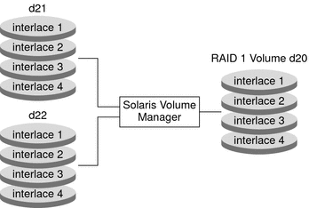
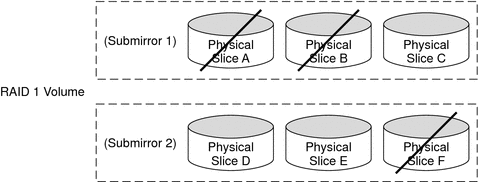

|
|||
|
1. Getting Started With Solaris Volume Manager 2. Storage Management Concepts 3. Solaris Volume Manager Overview 4. Solaris Volume Manager for Sun Cluster (Overview) 5. Configuring and Using Solaris Volume Manager (Scenario) 8. RAID-0 (Stripe and Concatenation) Volumes (Overview) 9. RAID-0 (Stripe and Concatenation) Volumes (Tasks) 10. RAID-1 (Mirror) Volumes (Overview) RAID-1 Volume (Mirror) Resynchronization Creating and Maintaining RAID-1 Volumes The Affect of Booting Into Single-User Mode on RAID-1 Volumes Scenario--RAID-1 Volumes (Mirrors) 11. RAID-1 (Mirror) Volumes (Tasks) 12. Soft Partitions (Overview) 16. Hot Spare Pools (Overview) 20. Maintaining Solaris Volume Manager (Tasks) 21. Best Practices for Solaris Volume Manager 22. Top-Down Volume Creation (Overview) 23. Top-Down Volume Creation (Tasks) 24. Monitoring and Error Reporting (Tasks) 25. Troubleshooting Solaris Volume Manager (Tasks) A. Important Solaris Volume Manager Files B. Solaris Volume Manager Quick Reference |
Overview of RAID-1 (Mirror) VolumesA RAID-1 volume, or mirror, is a volume that maintains identical copies of the data in RAID-0 (stripe or concatenation) volumes. The RAID-0 volumes that are mirrored are called submirrors. Mirroring requires an investment in disks. You need at least twice as much disk space as the amount of data you have to mirror. Because Solaris Volume Manager must write to all submirrors, mirroring can also increase the amount of time it takes for write requests to be written to disk. After you configure a mirror, the mirror can be used just like a physical slice. You can mirror any file system, including existing file systems. These file systems root (/), swap, and /usr. You can also use a mirror for any application, such as a database. Tip - Use Solaris Volume Manager's hot spare feature with mirrors to keep data safe and available. For information on hot spares, see Chapter 16, Hot Spare Pools (Overview) and Chapter 17, Hot Spare Pools (Tasks). Overview of SubmirrorsA mirror is composed of one or more RAID-0 volumes (stripes or concatenations) called submirrors. A mirror can consist of up to four submirrors. However, two-way mirrors usually provide sufficient data redundancy for most applications and are less expensive in terms of disk drive costs. A third submirror enables you to make online backups without losing data redundancy while one submirror is offline for the backup. If you take a submirror “offline,” the mirror stops reading and writing to the submirror. At this point, you could access the submirror itself, for example, to perform a backup. However, the submirror is in a read-only state. While a submirror is offline, Solaris Volume Manager keeps track of all writes to the mirror. When the submirror is brought back online, only the portions of the mirror that were written while the submirror was offline (the resynchronization regions) are resynchronized. Submirrors can also be taken offline to troubleshoot or repair physical devices that have errors. Submirrors can be attached or be detached from a mirror at any time, though at least one submirror must remain attached at all times. Normally, you create a mirror with only a single submirror. Then, you attach a second submirror after you create the mirror. Scenario—RAID-1 (Mirror) VolumeFigure 10-1 illustrates a mirror, d20. The mirror is made of two volumes (submirrors) d21 and d22. Solaris Volume Manager makes duplicate copies of the data on multiple physical disks, and presents one virtual disk to the application, d20 in the example. All disk writes are duplicated. Disk reads come from one of the underlying submirrors. The total capacity of mirror d20 is the size of the smallest of the submirrors (if they are not of equal size). Figure 10-1 RAID-1 (Mirror) ExampleProviding RAID-1+0 and RAID-0+1Solaris Volume Manager supports both RAID-1+0 and RAID-0+1 redundancy. RAID-1+0 redundancy constitutes a configuration of mirrors that are then striped. RAID-0+1 redundancy constitutes a configuration of stripes that are then mirrored. The Solaris Volume Manager interface makes it appear that all RAID-1 devices are strictly RAID-0+1. However, Solaris Volume Manager recognizes the underlying components and mirrors each individually, when possible. Note - Solaris Volume Manager cannot always provide RAID-1+0 functionality. However, where both submirrors are identical to each other and are composed of disk slices (and not soft partitions), RAID-1+0 is possible. Consider a RAID-0+1 implementation with a two-way mirror that consists of three striped slices. Without Solaris Volume Manager, a single slice failure could fail one side of the mirror. Assuming that no hot spares are in use, a second slice failure would fail the mirror. Using Solaris Volume Manager, up to three slices could potentially fail without failing the mirror. The mirror does not fail because each of the three striped slices are individually mirrored to their counterparts on the other half of the mirror. Figure 10-2 illustrates how a RAID-1 volume can experience the loss of a slice, yet the RAID-1+0 implementation prevents data loss. Figure 10-2 RAID-1+0 ExampleThe RAID-1 volume consists of two submirrors. Each of the submirrors consist of three identical physical disks that have the same interlace value. A failure of three disks, A, B, and F, is tolerated. The entire logical block range of the mirror is still contained on at least one good disk. All of the volume's data is available. However, if disks A and D fail, a portion of the mirror's data is no longer available on any disk. Access to these logical blocks fail. However, access to portions of the mirror where data is available still succeed. Under this situation, the mirror acts like a single disk that has developed bad blocks. The damaged portions are unavailable, but the remaining portions are available. |
||
|